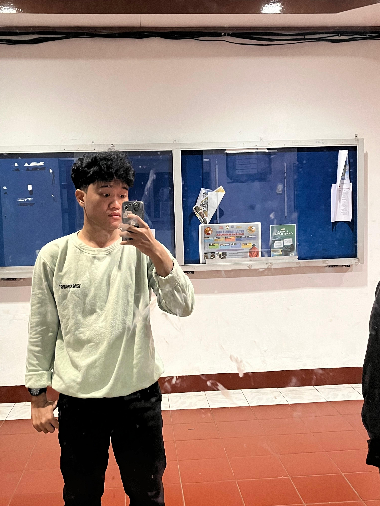

Juan Bagas Geraldo
- NIM
- 2481013
- Program Studi
- Teknik Informatika
- Kampus
- Universitas Advent Indonesia
- Asal
- Bandung Barat, Jawa Barat

Saya anak yang gampang penasaran. Awalnya masuk jurusan ini karena ingin tahu bagaimana sebuah situs bisa tampil di layar, dan rasa penasaran itu belum habis sampai sekarang. Teman-teman biasanya menyebut saya orang yang tenang, tapi cerewet kalau sudah membahas hal yang disukai.
Target saya dalam beberapa tahun ke depan sederhana: lulus tepat waktu, punya portofolio yang bisa dibanggakan, dan bisa bekerja di tim yang mau saling belajar.
Diurutkan dari yang paling sering saya lakukan.
Tidak berurutan, semuanya sama serunya.
| No | Semester | Tahun Akademik | IPK (GPA) |
|---|---|---|---|
| 1 | Ganjil (Semester 3) | 2025/2026 | 3.50 |
| 2 | Genap (Semester 4) | 2025/2026 | 3.60 |
| No | Jenjang | Nama Sekolah | Lulusan Angkatan |
|---|---|---|---|
| 1 | SD | SD Negeri 14 Pagi | 2014 |
| 2 | SMP | SMP Cengkareng 1 | 2017 |
| 3 | SMA/SMK | SMK Cengkareng 1 | 2020 |
| 4 | Perguruan Tinggi | Universitas Advent Indonesia | Angkatan 2024 |